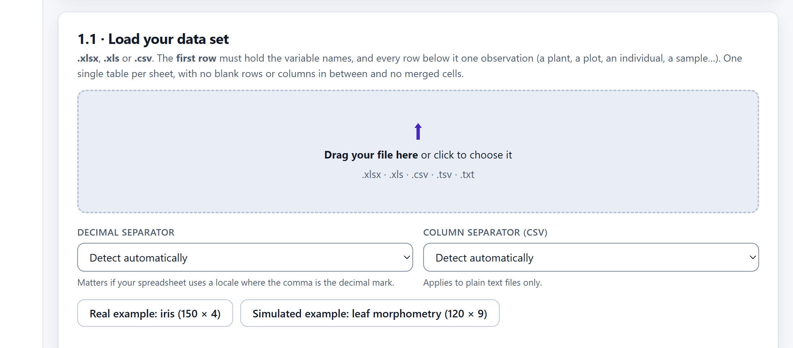
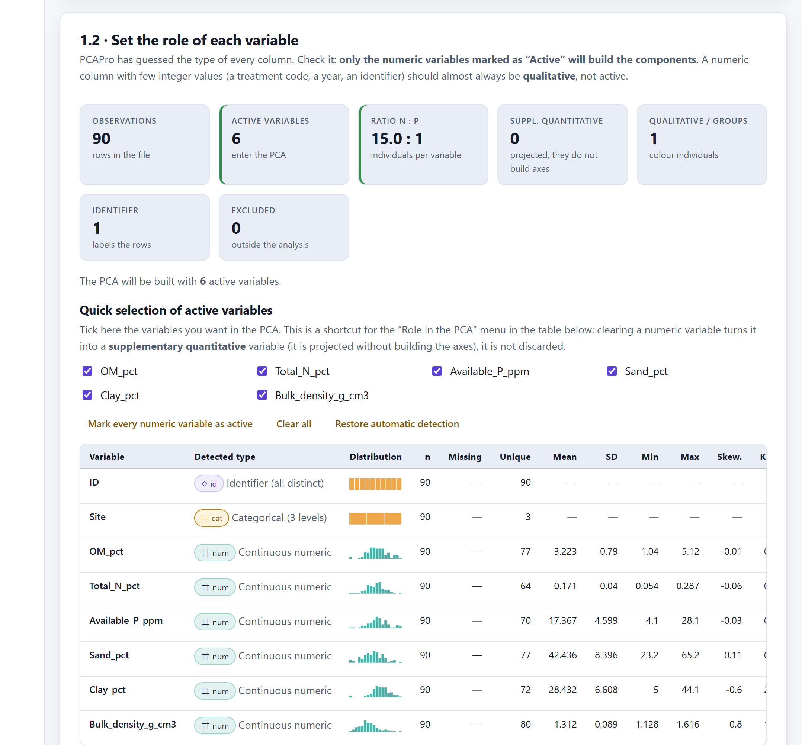
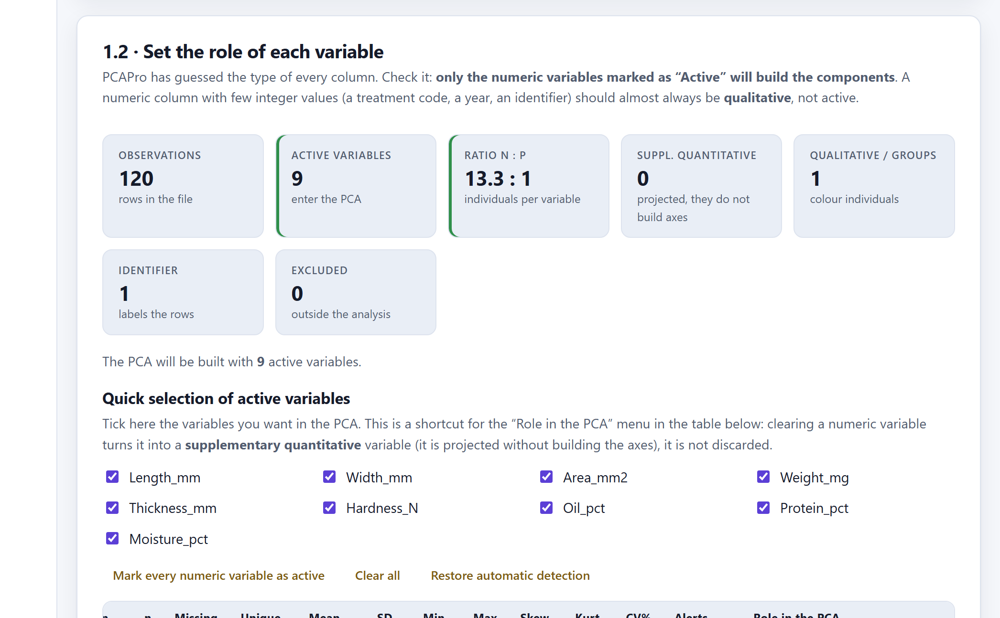
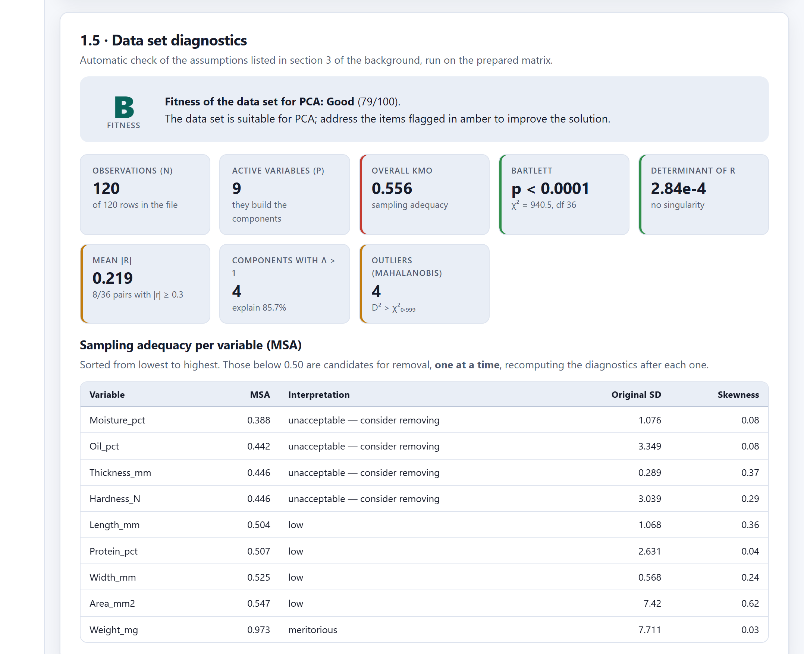
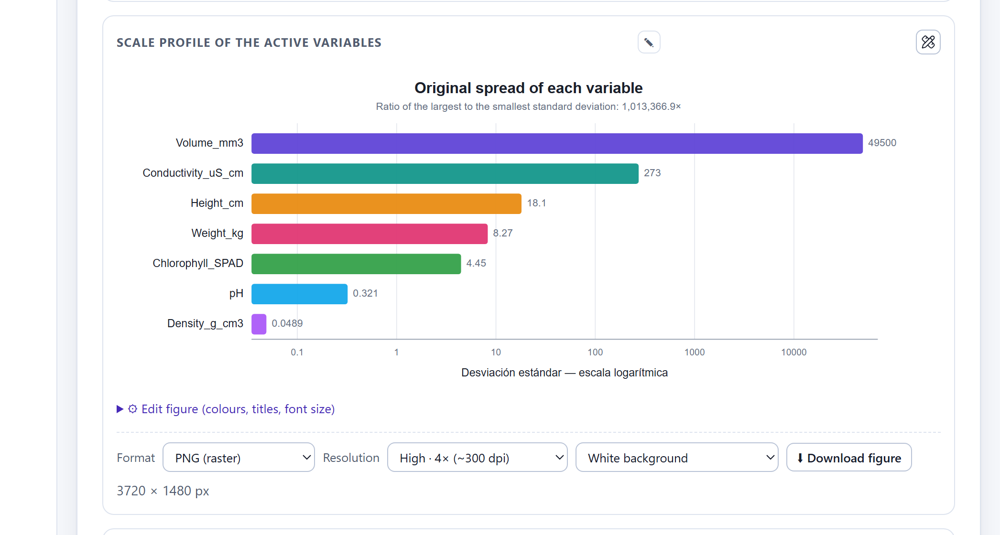
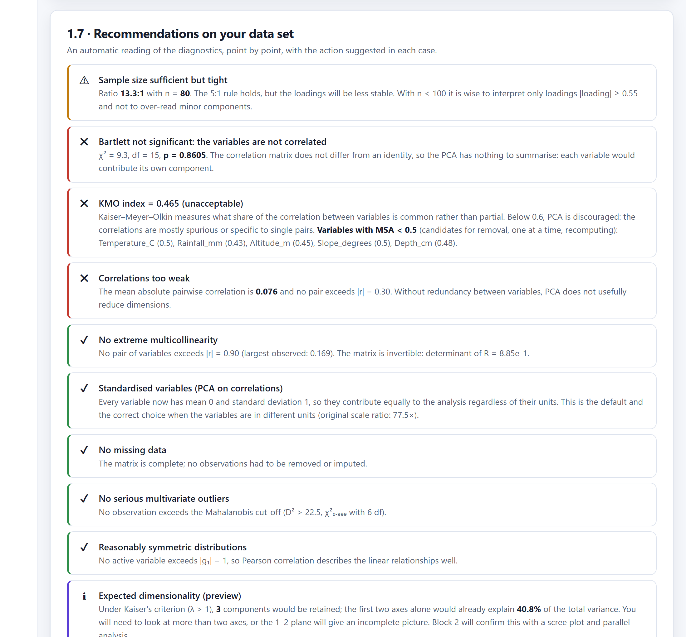

How to prepare the sheet, load it, say what role each column plays, deal with missing data and scales, and check whether the data support a factor analysis before anything is computed. It ends with the choice of method and four practice files, one for each typical situation.
Most of the problems of a factor analysis arise before the program is opened, in the shape of the sheet. Ten minutes tidying it up save hours of odd results.
PCAPro expects a rectangular table: the first row with the names of the variables and each following row with one individual —a plant, a plot, a soil sample—. It is the “wide” format you already use for recording field data.
| ID | Site | OM_pct | Total_N_pct | |
|---|---|---|---|---|
| 1 | S001 | Upper slope | 2.15 | 0.080 |
| 2 | S002 | Upper slope | 1.04 | 0.079 |
| 3 | S031 | Mid slope | 3.09 | |
| 4 | S061 | Floodplain | 3.54 | 0.182 |
| ID | Site | OM | Total N | |
|---|---|---|---|---|
| 1 | S001 | 1 | 2.15 % | 0.080 |
| 2 | — Mid slope — | |||
| 3 | S031 | 2 | 3.09 | no data |
| 4 | S061 | 3 | ≈ 3.5 | 0,182 |
On the left, four rows of practice1_soils.csv, with one missing value left blank as an example. On the right, five common mistakes: a site coded with numbers, a title row in the middle of the data, a missing value written as unrecognised text, an approximate number and a decimal comma in a file that uses the point. A % sign at the end of a number, by contrast, is ignored without trouble.
| Rule | Why |
|---|---|
| One table per sheet, starting at cell A1 | The app takes the first non-empty row as the header and everything below as data. |
| No merged cells and no title rows in between | A row such as “— Mid slope —” would be read as one more individual, almost empty. |
| One column per variable, with a short, unique name | The name appears in tables and figures. Avoid spaces and accents if the file will pass through other programs. |
| Only the number in each cell | “12 cm” or “≈ 3.5” are not read as numbers. A % sign at the end is ignored. |
| Groups as text, not as codes: “Valley”, “T1”, “Control” | A column of 1, 2, 3 looks numeric; the app suspects it is a code, but a text label leaves no doubt. |
| One identifier column with distinct values | It labels the points on the maps; without it, the individuals are called “Ind 1”, “Ind 2”… |
| Missing values left empty or with a recognised code (table 3.2) | Any other text in a numeric column counts as a non-numeric value. |
Prefixes for thematic groups: soil_pH, plant_height | That way the recommender detects the groups and proposes multiple factor analysis (section 3.7). |
Empty cell · NA · N/A · NaN · null · nulo · . · - · -- · ? · ND · S/D · SD · missing · faltante · #N/A · #¡DIV/0! · #VALUE! · #VALOR! |
The app reads SD and sd as “no data”. If some column holds standard deviations, or a category is named that way, rename it before loading the file; otherwise those cells will be left empty.
The 1.1 · Load your data set card accepts .xlsx, .xls, .csv, .tsv and .txt files. Drag the file onto the dotted area or click it to browse. When the reading is done, a green message appears with the rows and columns read, and cards 1.2, 1.3 and 1.4 open.

1 2 3 4 5| Option | How it reads “1,234” and “12,5” | When to choose it |
|---|---|---|
| Detect automatically | Each value on its own: if it ends in a comma and one to three digits, and has no point followed by digits, the comma is the decimal mark: “12,5” = 12.5, but also “1,234” = 1.234. Otherwise, the commas are removed as thousands separators. | Most files. |
| Point (12.34) | The commas are removed: “1,234” = 1234. | If your file uses the comma for thousands. |
| Comma (12,34) | The points are removed and the comma is the decimal mark: “1.234,5” = 1234.5. | Files exported with a Spanish regional setting. |
If the Excel workbook has several sheets, the Workbook sheet picker appears so you can choose which one to analyse. The separators do not apply to .xlsx, which already stores numbers as numbers. Remember that reading .xlsx needs a connection the first time you open the app; .csv files are always read offline (section 1.5).
The 1.4 · File preview card shows the first twelve rows exactly as they were read. A symbol in front of each name recalls its role: ⌗ active · ⊕ supplementary quantitative · ⌸ qualitative · ◇ identifier · ∅ excluded. If you see numbers where you expected text, or dashes where there were data, check the decimal separator before going on.
When the file is loaded, the app examines each column, works out its type and proposes a role for it. The proposal is usually right, but reviewing it is the most important step of the block: only the variables marked as active build the components.
| If the column… | Type detected | Role proposed |
|---|---|---|
| has at least 85 % numeric values (and three or more) | Continuous or integer numeric | Active |
| is numeric but does not vary | Constant | Exclude |
| is integer numeric with very few distinct values (8 or fewer, and no more than 5 % of the rows) | Numeric (integers), with the “group code?” warning | Qualitative / group |
| is text and all its values are distinct | Identifier | Row identifier |
| is text with more than 30 categories | Text | Exclude |
| is text with 30 categories or fewer | Categorical | Qualitative / group |
| Role in the app | What it does in the analysis | Use it for |
|---|---|---|
| Active (enters the PCA) | Builds the components. | The measurements you want to summarise, all bearing on the same question. |
| Supplementary quantitative | Takes no part in the computation; it is projected afterwards onto the correlation circle. | A response variable, such as yield, that you want to see on the map without it defining the map. |
| Qualitative / group | Colours the individuals, draws ellipses and allows groups to be compared; in MCA, CA and FAMD it can enter the axes. | Design factors and characteristics with categories: site, treatment, species. |
| Row identifier | Gives each individual a name in tables and maps. | The sample key. |
| Exclude | The column is left out of everything. | Dates, field notes, auxiliary columns. |

1 2 3 4 5 6practice1_soils.csv.Site, detected as categorical with 3 levels.The table of variables continues to the right with the spread, the shape of the distribution, the warnings and the role picker, which figure 3.3 shows with the seeds file. The quick selection and the Role in the PCA picker are synchronised: changing one changes the other.

practice2_seeds.csv. The Warnings column marks in orange the variables with a value more than three standard deviations from the mean; the Role in the PCA column offers only the roles each type admits: a text column cannot be active. Below, the How to decide box sums table 3.5 up.| Warning | Colour | What it means and what to do |
|---|---|---|
| zero variance | red | Every value is the same; it adds nothing and is left out. |
| N % missing | orange > 5 % · red > 20 % | Consider whether to impute or exclude the variable (section 3.4). |
| skewed · very skewed | orange |g₁| > 1 · red |g₁| > 2 | Consider a logarithmic or square-root transformation. |
| N out. |z|>3 | orange | There are N values more than three standard deviations from the mean: check that they are not recording errors. |
| group code? | orange | Integers with few distinct values: probably a treatment or a block. |
| no warnings | green | — |
| If the variable… | then |
|---|---|
| Describes the individuals from the same question as the others | Active. |
| Is the response you want to explain with the structure (yield, mortality) | Supplementary quantitative: that way you do not manufacture the relationship you want to find. |
| Is a design factor (treatment, block, site) | Qualitative / group, and outside the axes (section 1.4). |
| Is a sum, ratio or percentage of other active variables (area = length × width) | Keep either the original variables or the derived one, not both. |
| Measures another theme (climate among plant variables) | Supplementary, or else a multiple factor analysis with groups. |
The preparation button is enabled with two active variables, but a PCA with fewer than three rarely has anything to summarise. The n:p ratio indicator turns green from 10 individuals per variable, amber between 5 and 10, and red below 5.
The 1.3 · Preparing the matrix card gathers the three decisions that turn the raw table into the matrix that is analysed. They are applied in this order: first the missing data, then the transformation and finally the scaling. Figure 3.4 shows the whole card.
| Option | What it does | Use it when |
|---|---|---|
| Delete incomplete rows (listwise) | Discards every row with any missing value among the active variables. It is the default option. | Few data are missing and they are scattered: you lose less than 10 % of the rows. |
| Impute with the variable mean | Fills each gap with the mean of its column. | Few data are missing, the variable is symmetric and you do not want to lose rows. |
| Impute with the variable median | Fills each gap with the median. | As above, with skewed variables or with outliers. |
With either imputation, a row that is empty on every active variable is discarded all the same. If fewer than three rows remain after the treatment, the app does not prepare the matrix and says so.
Filling gaps with the mean invents no information, but it flattens it: every gap receives the same value, so the variance of the variable falls and its correlations with the others are attenuated. With 2 % of gaps the effect is negligible; with 20 % it can change the components. If you impute, state it in the methods, and if a lot of data are missing consider iterative methods such as those of missMDA in R.
| Option | What it is for | If there are zeros or negatives |
|---|---|---|
| None (original data) | The default option. | — |
| Natural logarithm, ln(x) | Strong positive skew: concentrations, biomass, counts. | It adds 1 − minimum, so that the smallest value is 1. |
| Base 10 logarithm | The same as ln, in orders of magnitude. | It adds 1 − minimum. |
| Square root | Moderate skew and small counts. | It adds −minimum if there are negatives. |
| Inverse, 1/x | Heavily skewed rates and times. | It adds 1 − minimum. |
The chosen transformation is applied to every active variable, not only to the skewed ones. If only one or two need it, transform them in your spreadsheet before loading the file and leave None here.
PCA looks for the directions of greatest variance, and variance depends on the units. The scaling decides how much each variable weighs. Start with the decision rule; table 3.9 sets out the seven options of the app.
| If your active variables… | then |
|---|---|
| Are in different units (%, ppm, cm, g) | z standardisation. That is the case in almost every agronomic and ecological study. |
| Share unit and scale and you want to keep them | Unscaled. The app considers this defensible, in amber, if the largest standard deviation is no more than 4 times the smallest; above that it marks it in red. |
| Have real outliers you do not want to remove | Robust, and compare with z. |
| Are intensities or spectra with dominant peaks | Pareto. |
If in doubt, standardise. A PCA on correlations is rarely a mistake; one on covariances with mixed units almost always is. Section 3.8 shows the case with figures.
| Option | Computation | Effect and use |
|---|---|---|
| z standardisation (default) | (x − mean) / SD | Every variable weighs the same. PCA on the correlation matrix. The correct option if the units differ. |
| Unscaled | x | PCA on covariances. Only if every variable shares a unit and a scale, for example measurements of one organ in millimetres. |
| Centre only | x − mean | Amounts to unscaled: PCA centres in any case. |
| Pareto | (x − mean) / √SD | It attenuates the dominant variables without equalising them. Typical in metabolomics and spectra. |
| VAST | (x − mean) / SD × mean / SD | It rewards stable variables, those with a low coefficient of variation. |
| Range [0, 1] | (x − min) / (max − min) | Convenient for indices, but a single extreme value compresses the rest. |
| Robust | (x − median) / MAD | It uses the median and the median absolute deviation: it withstands the outliers you do not want to remove. |
When you press Prepare matrix and run diagnostics → the app builds the matrix, computes its correlations and opens the 1.5 · Data set diagnostics card: a grade from A to D, eight indicators and the sampling adequacy of each variable.
Topic 3 of the theoretical framework, Postulates and assumptions, develops them; in short they are five conditions. The variables must be correlated, because that is what the analysis lives on; the relationships must be approximately linear, because that is how Pearson measures them; the sample must be sufficient for the correlations to be stable; there must be no outliers that create an axis on their own; and the scales must be comparable or standardised. Descriptive PCA does not require normality, although heavily skewed distributions distort the correlations.
Bartlett asks whether the variables are correlated at all; with large samples it almost always says yes, so it is not enough. KMO asks whether those correlations are of common structure: it compares the correlations with the partial correlations, which become small when several variables share a factor. The MSA is the same computation for each variable: it says which ones contribute to the structure and which only add noise. Kaiser's scale for interpreting them is in section 1.9.
The grade adds up points from six criteria to a maximum of 100. It sums the diagnostics up in a letter, but it does not replace them.
| Criterion | Maximum | Points |
|---|---|---|
| Overall KMO | 30 | ≥ 0.80: 30 · ≥ 0.70: 24 · ≥ 0.60: 17 · ≥ 0.50: 9 · less: 0 |
| Bartlett | 20 | p < 0.05: 20 · otherwise: 0 |
| n:p ratio | 20 | ≥ 10: 20 · ≥ 5: 14 · ≥ 3: 8 · less: 2 |
| Sample size n | 10 | ≥ 100: 10 · ≥ 50: 7 · ≥ 30: 4 · less: 1 |
| Missing data | 10 | < 5 %: 10 · < 15 %: 6 · more: 2 |
| Determinant of R | 10 | > 10⁻⁵: 10 · > 10⁻⁹: 5 · less: 0 |
| A Excellent: 82 or more · B Good: 66 to 81 · C Acceptable with reservations: 48 to 65 · D Problematic: below 48 | ||
The grade does not consider the scales, the outliers, the skew or the redundancy. That is why a file with mismatched units left unstandardised can earn an A, and one with four unacceptable variables a B. Always read the colours of the indicators, the MSA table and the list of recommendations of section 3.6: that is where the problems the letter does not weigh are.

1 2 3 4 5 6practice2_seeds.csv, a file with problems planted in it.| Indicator | What it measures | Colour |
|---|---|---|
| Observations (n) | Individuals left after the treatment of missing data. | — |
| Active variables (p) | Columns that build the components. | — |
| Overall KMO | What share of the correlations is common to several variables and not just to pairs. | green ≥ 0.80 · amber ≥ 0.60 · red |
| Bartlett | Whether the correlation matrix differs from the identity. | green if p < 0.05 · red |
| Determinant of R | Close to 0: linearly dependent variables; close to 1: almost no correlation. | green > 10⁻⁵ · amber |
| Mean |r| | Mean absolute correlation between pairs, and how many pairs exceed 0.3. | green ≥ 0.30 · amber |
| Components with λ > 1 | How many axes Kaiser would retain and how much they would explain. It is a preview; Block 2 decides. | — |
| Outliers (Mahalanobis) | Individuals whose distance D² exceeds the 99.9th percentile of χ² with p degrees of freedom. | amber if there is any · green |
The MSA table orders the variables from lowest to highest. Those that fall below 0.50 are candidates for leaving the analysis, but one at a time: when a variable is removed the partial correlations of all the others change, and another one that looked unacceptable may turn out fine. Section 3.8 shows this with the seeds.
Below the diagnostics, the 1.6 · Graphical exploration card gathers five editable figures. They serve to see what the numbers summarise: table 3.12 describes them, and figure 3.6 shows the one that changes the most decisions.

1 2 3 4practice3_scales.csv. 1 The ratio between the largest and the smallest standard deviation: more than a million times. 2 Volume_mm3, with a deviation of 49,500. 3 The pH, with 0.321. 4 The axis is logarithmic: each tick multiplies by ten.| Figure | What it shows | What to look for |
|---|---|---|
| Map of missing data | Each row of the file against each variable, with the gaps in red and their count. | Missing values concentrated in one variable or in a group of individuals. |
| Scale profile | The original standard deviation of each variable, on a logarithmic scale. | Differences of several orders of magnitude: standardising is needed. |
| Distribution of each variable | Histograms with the reference normal curve and the skew g₁. | Long tails, bimodality, impossible values. |
| Correlation matrix | The Pearson correlations between active variables, in colour. | Blocks of correlated variables and nearly redundant pairs. |
| Comparison after preprocessing | Box plots of the variables once transformed and scaled. | That the scales have become comparable. |
The 1.7 · Recommendations on your data set card translates the diagnostics into ten points, always in the same order, each with its colour, the figure behind it and the suggested action. Figure 3.7 shows it with the file without structure, and table 3.13 sums up when each colour is taken.

1 2 3 4 5practice4_no_structure.csv. 1 A bare sample: n = 80. 2 Bartlett not significant. 3 Unacceptable KMO. 4 Correlations too weak. 5 Even so, Kaiser would retain 3 components: a warning about that criterion.| # | Point | ✔ green | ⚠ amber | ✖ red |
|---|---|---|---|---|
| 1 | Sample size | n:p ≥ 10 and n ≥ 100 | n:p ≥ 5 | n:p < 5 |
| 2 | Bartlett | p < 0.05 | — | p ≥ 0.05, or a singular matrix |
| 3 | KMO | ≥ 0.80 with no MSA < 0.50 | ≥ 0.60, or some MSA < 0.50 | < 0.60 |
| 4 | Correlation structure | some pair with |r| ≥ 0.30 | — | mean |r| < 0.30 and no pair ≥ 0.30 |
| 5 | Multicollinearity | no pair with |r| ≥ 0.90 | some pair ≥ 0.90 | — |
| 6 | Scales | z standardisation | unscaled or centre only, deviation ratio ≤ 4 | unscaled or centre only, ratio > 4 |
| 7 | Missing data | ≤ 5 % of the cells | ≤ 15 % | > 15 % |
| 8 | Multivariate outliers | none | some | — |
| 9 | Skewness | no |g₁| > 1 | some | — |
| 10 | Expected dimensionality | Informative (ℹ): components with λ > 1 and the variance of the 1–2 plane. | ||
Two points can also come out as informative (ℹ): the one about scales, when you choose Pareto, VAST, range or robust, which the app does not grade and asks you to document; and the one about outliers, when there are so few observations (n ≤ p + 2) that the Mahalanobis distance cannot be computed.
In figure 3.7, the KMO point lists “Variables with MSA < 0.5” and includes “Temperature_C (0.5)”. Its real MSA is 0.497; the list shows it with two decimal places. For the exact values consult the MSA table of the diagnostics, which uses three.
The 1.8 · Prepared matrix and downloads card, at the end of the block, shows the first ten rows of the matrix that will be analysed and offers four downloads.
| Button | Contents |
|---|---|
| ⬇ Prepared matrix (CSV) | The matrix after missing data, transformation and scaling: what actually goes into the analysis. |
| ⬇ Correlation matrix (CSV) | The correlations between active variables. |
| ⬇ Variable summary (CSV) | The table of card 1.2 with descriptive statistics and roles. |
| ⬇ Block 1 report (TXT) | The diagnostics and the recommendations in plain text. |
Between the recommendations and the downloads is the 1.9 · Which method fits card, which figure 1.4 introduced. It has three parts: one card per method with its verdict, a list of warnings and, below, the configuration the chosen method asks for. A click on a card chooses the method; those marked not applicable cannot be chosen.
| Method | Recommended if… | Possible if… |
|---|---|---|
| PCA | There are at least two active quantitative variables and no qualitative one, or up to two qualitative ones with three or more quantitative: the signature of measurements plus a design factor. | There are more qualitative ones; they would be left as supplementary. |
| CA | There are exactly two qualitative variables and no quantitative one. | There are two or more qualitative ones: one pair is crossed. |
| MCA | There are three or more qualitative variables and no quantitative one. | There are two or more qualitative ones. |
| FAMD | There are quantitative and qualitative variables, without the design-factor signature. | With the design-factor signature: if the qualitative variable is a characteristic. |
| MFA | The names of six or more quantitative variables form two or more groups by prefix (with _ or -), covering at least 75 % and with one group holding three variables. | There are four or more variables in all; the groups are declared by hand. |
A sixth card, Clustering on components (HCPC), always appears as “possible”: it does not compete with the other five, it is run after any of them (chapter 8). If more than one method is recommended, the app preselects the most specific one in this order: MFA, FAMD, MCA, CA and PCA. If none is recommended, it takes the first that is possible.
For the recommender, a qualitative variable is any column with the Qualitative / group role and at least two levels; a quantitative one, any active numeric column. If you change a role on card 1.2 and prepare the matrix again, the verdicts are recomputed.
| Warning | It is issued when |
|---|---|
| Small sample | There are fewer than 50 observations. |
| Few observations per variable | There are fewer than 5 observations per variable. |
| There is no correlation to summarise (red) | Bartlett does not reject independence (p ≥ 0.05), or the mean |r| is below 0.20 and at most one pair exceeds 0.30. |
| Nearly redundant variables | Some pair of quantitative variables has |r| ≥ 0.90. |
| This looks like an abundance table | Three or more active variables, all non-negative integers, with at least 20 % zeros. On such data PCA produces the “Gauch arch”: CA or a transformation is advisable. |
| Categories with very few cases | Some category has fewer than 5 cases or less than 2 % of the rows. |
| The qualitative variables are not associated (red) | The highest Cramér's V between pairs of qualitative variables is below 0.10. |
The verdict of each card is based on what type of variables you have; the warnings say whether the method has anything to find. They can contradict each other. With practice4_no_structure.csv, the PCA card says “recommended” —six quantitative variables and one qualitative— and immediately below, in red, appears “There is no correlation to summarise”. The warning prevails: with those data there is no analysis to be done.
| Method | Configuration |
|---|---|
| PCA | None: it uses the active variables with the chosen scaling, and the qualitative ones are left as supplementary. |
| CA | Two pickers, Rows and Columns, to choose which qualitative variables are crossed. They must be different. |
| MCA | One checkbox per qualitative variable; the unticked ones are left as supplementary. At least two are needed. |
| FAMD | One checkbox per qualitative variable: tick those that are characteristics of the individual and untick the design factors. At least one is needed. |
| MFA | A table with each active variable and a field for the name of its group. Those bearing the same name go together; each group needs at least two variables. |
The button at the end of the block changes with the choice —Go to Block 2: PCA →, Go to Block 2: MCA →— so that you always know which method you are about to run. With CA, MCA and FAMD, the rows that have one of the qualitative variables used left empty are discarded when the method is run, and Block 2 indicates this with the Rows with no data indicator.
The four files in the datos/ folder recreate the situations that come up most often in practice. Load each one with the upload area of card 1.1, leave the detected roles and the z scaling unless the case says otherwise, and press Prepare matrix and run diagnostics →. The figures are the ones the app gives.
practice1_soils.csv · 90 soil samples from three sites: upper slope, mid slope and floodplainID as the identifier, Site as a qualitative variable with 3 levels and the six soil variables as active. The n:p ratio is 15.0 : 1, in green.Site as supplementary.Reading. A file like this can be extracted with confidence. The size warning suggests caution with the smaller loadings: with n < 100 it is advisable to interpret only those above 0.55.
practice3_scales.csv · 100 observations from four plots, with variables in widely differing unitspractice4_no_structure.csv · 80 sampling points in two batches, with six independent environmental variablesReading. There is no analysis to be done: each variable is its own axis. The case teaches two things worth remembering. First, that the Kaiser criterion retains components even in data without structure, and that is why Block 2 does not trust it alone. Second, that the verdict on the method does not replace the warnings. If you expected those variables to be related, the finding is precisely that they are not.
practice2_seeds.csv · 120 seeds, 60 wild and 60 cultivated, with problems planted in them| Step | Removed | Active | KMO | Letter | What happens to the rest |
|---|---|---|---|---|---|
| 0 | — | 9 | 0.556 | B | Moisture 0.388 · Oil 0.442 · Thickness 0.446 · Hardness 0.446 below 0.50. |
| 1 | Moisture_pct (0.388) | 8 | 0.558 | B | Three remain below 0.50. |
| 2 | Hardness_N (0.447) | 7 | 0.577 | B | Oil 0.461 and Thickness 0.482. |
| 3 | Oil_pct (0.461) | 6 | 0.591 | B | All ≥ 0.50: Thickness_mm rose to 0.503 without being removed. |
| 4 | Area_mm2 (redundant) | 5 | 0.726 | A | The redundant pairs disappear, but Thickness_mm drops to 0.333. |
| 5 | Thickness_mm (0.333) | 4 | 0.741 | A | All ≥ 0.54; two outliers remain: G017 (D² = 58.0) and G101 (D² = 40.9). |
Reading. Three lessons in one table. The first: removing one at a time matters. At step 3, Thickness_mm ended up fine without being touched; if the four unacceptable ones had been taken out at the start all at once, it would have been lost for no reason. The second: redundancy weighs. Area_mm2 is almost length times width, and removing it raised the KMO from 0.591 to 0.726. The third: removals chain together, because each set of variables has its own partial correlations, and Thickness_mm, which had been saved, fell when Area_mm2 was taken out.
The case ends with 4 of 9 variables and a grade of A. That is a good statistical result, but it no longer describes the chemical composition of the seeds, only their size, weight and protein. Before removing a variable ask yourself whether your question still stands without it, and in the methods state which ones you took out and why. The two outliers that remain are not removed for being outliers: check whether G017 and G101 are recording errors and, if they are real seeds, compare the analysis with and without them.
With the matrix prepared, diagnosed and the method chosen, the next chapter enters Block 2: extracting the components and deciding how many to keep.